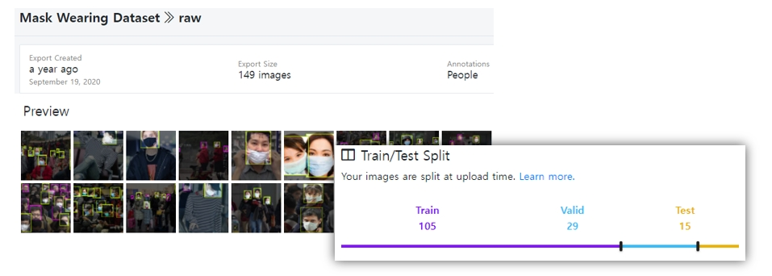
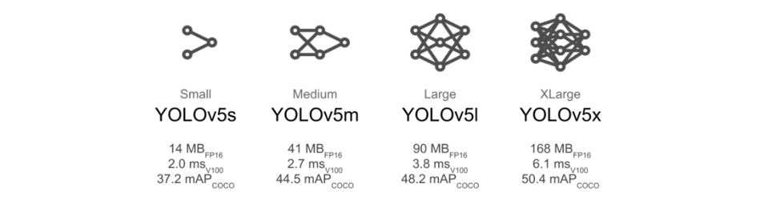
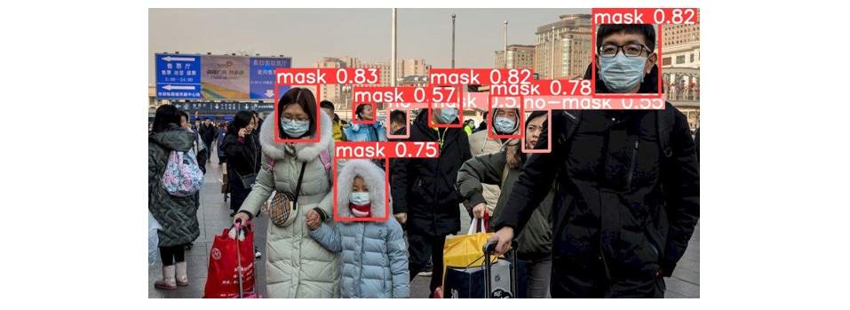

custom dataset으로 YOLOv5 학습하기2
이 포스트는 여러 절로 구성되어 있습니다.
이전 포스트에서 custom dataset으로 YOLOv5 모델을 학습시키는 방법에 대해서 설명하였다. 여기서는 학습과 관련된 파라미터를 조정하는 방법에 대해서 설명한다. 앞에서와 마찬가지로 실습환경은 google colab이다.
1. 데이터셋 소개
실습에 사용되는 데이터셋은 roboflow에서 제공되는 Mask Wearking Dataset(raw)이다.[링크]
(raw와 416x416으로 변환된 데이터셋을 선택할 수 있는데, 여기서는 raw 데이터셋을 사용한다.)

2. colab에서 환경구축하기
환경구축은 앞과 같기 때문에 간력하게 설명한다. 상세한 내용은 이전 포스트를 참고한다. [링크]
- google colab에 접속하고 새 노트를 생성
-
런타임-런타임 유형 변경을 선택후, 가속기를GPU로 설정 - yolov5 파일을 다운로드 및 필수 라이브러리를 설치
!git clone https://github.com/ultralytics/yolov5 # yolov5 코드 clone
%cd yolov5 # clone한 폴더로 진입
%pip install -qr requirements.txt # 필수 라이브러리 설치
-
custom dataset 업로드 (여기서는
mask_dataset.zip으로 설명) -
데이터 셋 파일 압축 해제
!unzip ../custom_dataset.zip
- ` yolov5/data/
폴더에mask_dataset.yaml`파일 작성
path: /content/yolov5/mask_dataset
train: train/images
val: valid/images
test: test/images
nc: 2
names: ['mask', 'no-mask']
3. 학습 파라미터 살펴보기
이제 학습할 때 파라미터를 조정하는 방법에 대해서 설명한다.
모델을 학습할 때 다음과 같이 데이터셋 관련 경로만 입력하면 가능하다.
!python train.py --data "데이터셋.yaml 파일 경로"
나머지 파라미터들은 디펄트 값으로 대체된다. 그러면 학습과 관련된 파라미터에는 어떤 것들이 있을까? yolov5 폴더 안에 있는 train.py 파일을 열어서 440번째 라인 부근에 있는 parse_opt 함수를 살펴보자. 아래와 같이 파라미터들이 정의되어 있다.
def parse_opt(known=False):
parser = argparse.ArgumentParser()
parser.add_argument('--weights', type=str, default=ROOT / 'yolov5s.pt', help='initial weights path')
parser.add_argument('--cfg', type=str, default='', help='model.yaml path')
parser.add_argument('--data', type=str, default=ROOT / 'data/coco128.yaml', help='dataset.yaml path')
parser.add_argument('--hyp', type=str, default=ROOT / 'data/hyps/hyp.scratch.yaml', help='hyperparameters path')
parser.add_argument('--epochs', type=int, default=300)
parser.add_argument('--batch-size', type=int, default=16, help='total batch size for all GPUs, -1 for autobatch')
parser.add_argument('--imgsz', '--img', '--img-size', type=int, default=640, help='train, val image size (pixels)')
parser.add_argument('--rect', action='store_true', help='rectangular training')
--- (생 략)
학습과 관련된 파라미터가 40여개나 된다. 하지만 모두 알 필요는 없다. 모델 성능이나 하드웨어 자원과 관련된 중요한 파라미터만 살펴보자.
- 모델구조 (–weights)
모델 구조와 관련된 파라미터이다. YOLOv5는 다양한 모델 구조를 제공한다. default 값은 YOLOv5로 구조가 제일 간단하다. 모델의 구조가 더 복잡한 것으로 YOLOv5m, YOLOv5l, YOLOv5x 이 있다.

구조가 복잡할 수록 성능이 높아질 가능성은 높지만 학습할 때 더 많은 시간이 소요되고 많은 리소스가 요구된다. 예를 들어 yolov5m 모델을 학습시키고 싶다면 다음과 같이 입력하면 된다.
--weights "yolov5m.pt"
공식 github에는 이외에 새로운 모델 구조가 지속적으로 업로드되고 있다. [링크]
- 배치 사이즈 (–batch-size)
학습할 때 한번에 처리할 이미지 수(batch-size)를 지정할 수 있다. default는 16이다. batch size를 32로 입력하고 싶다면 다음과 같이 옵션 설정을 하면된다.
--batch-size 32
- 이미지 크기 (–imgsz, –img, –img-size)
YOLOv5는 학습할 때 모든 이미지 사이즈를 동일하게 resizing 한다. default 사이즈는 640x640이다. 이미지 사이즈를 크게 설정할수록 모델 성능은 더 좋아실 수 있다. 하지만 학습속도와 리소스 부담은 더 커지게 된다. 이미지 크기를 1280x1280으로 설정하고 싶다면 다음과 같이 입력한다.
--imgsz(or --img or --img-size) 1280
검증이나 시험할 때 학습에 사용한 이미지 사이즈와 동일하게 설정해야한다.
- 에포크 수 (–epochs)
데이터셋으로 학습을 반복할 횟수를 지정하는 에포크의 default 값은 300이다. 100으로 설정하고 싶다면 다음과 같이 입력한다.
--epochs 100
- 하이퍼 파라미터 (–hyp)
하이퍼 파라미터가 정의되어 있는 경로를 지정한다. default 값은 data/hyps/hyp.scratch.yaml이다. 해당 경로의 파일을 열어 확인해보자.
4. 파라미터를 조정하여 모델 학습하기
colab에서 제공하는 자원을 최대한 사용하여 학습을 진행해보자. 모델 구조는 yolov5m.pt, 입력 이미지 크기는 1280, 배치 사이즈는 8, 에포크 수는 60으로 설정해보자. (모델 구조가 커지고 입력 이미지가 복잡해져서 colab gpu 한계를 맞추기 위해 배치 사이즈와 학습시간을 줄여야만 했다.)
!python train.py --data "data/mask_dataset.yaml" --batch-size 8 --img 1280 --weights "yolov5m.pt" --epochs 60
train: weights=yolov5m.pt, cfg=, data=data/mask_dataset.yaml, hyp=data/hyps/hyp.scratch.yaml, epochs=60, batch_size=8, imgsz=1280, rect=False,
--(생 략)
hyperparameters: lr0=0.01, lrf=0.1, momentum=0.937, weight_decay=0.0005, warmup_epochs=3.0, warmup_momentum=0.8, warmup_bias_lr=0.1, box=0.05, cls=0.5,
--(생 략)
from n params module arguments
0 -1 1 5280 models.common.Conv [3, 48, 6, 2, 2]
1 -1 1 41664 models.common.Conv [48, 96, 3, 2]
2 -1 2 65280 models.common.C3 [96, 96, 2]
--(생 략)
Model Summary: 290 layers, 20856975 parameters, 0 gradients, 48.0 GFLOPs
Class Images Labels P R mAP@.5 mAP@.5:.95: 100% 2/2 [00:06<00:00, 3.12s/it]
all 29 162 0.81 0.853 0.861 0.531
mask 29 142 0.871 0.805 0.888 0.559
no-mask 29 20 0.75 0.9 0.835 0.503
Results saved to runs/train/exp3
여기서는 학습 결과가 /runs/train/exp3에 저장되었다. 사용자 마다 저장위치가 다를 것이다.
5. 검증하기
검증과 관련된 파라미터는 val.py 파일의 306번째 라인의 parse_opt 함수에 정의되어 있다.
학습할 때 이미지 사이즈는 1280으로 설정하였고, 모델 가중치는 /runs/train/exp3/weights/best.pt 저장되어 있으므로 다음과 같이 입력하여 검증을 진행하자.
!python val.py --data "data/mask_dataset.yaml" --img 1280 --weights "/content/yolov5/runs/train/exp3/weights/best.pt"
val: data=data/mask_dataset.yaml, weights=['/content/yolov5/runs/train/exp3/weights/best.pt'], batch_size=32, imgsz=1280, conf_thres=0.001, iou_thres=0.6, task=val, device=, workers=8, single_cls=False, augment=False, verbose=False, save_txt=False, save_hybrid=False, save_conf=False, save_json=False, project=runs/val, name=exp, exist_ok=False, half=False, dnn=False
YOLOv5 🚀 v6.0-159-gdb6ec66 torch 1.10.0+cu111 CUDA:0 (Tesla K80, 11441MiB)
Fusing layers...
Model Summary: 290 layers, 20856975 parameters, 0 gradients, 48.0 GFLOPs
val: Scanning '/content/yolov5/mask_dataset/valid/labels.cache' images and labels... 29 found, 0 missing, 0 empty, 0 corrupted: 100% 29/29 [00:00<?, ?it/s]
Class Images Labels P R mAP@.5 mAP@.5:.95: 100% 1/1 [00:08<00:00, 8.05s/it]
all 29 162 0.813 0.851 0.862 0.535
mask 29 142 0.878 0.81 0.887 0.556
no-mask 29 20 0.748 0.892 0.837 0.514
Speed: 1.5ms pre-process, 166.8ms inference, 4.4ms NMS per image at shape (32, 3, 1280, 1280)
Results saved to runs/val/exp
예측결과가 runs/val/exp에 저장되었다.
6. 예측하기
예측할 때는 기본적으로 모델의 경로(–weights), 입력 데이터 경로(–source)를 지정해줘야 한다. 여기에 추가로 이미지 사이즈(–img)도 지정해주자.
!python detect.py --img 1280 --weights "/content/yolov5/runs/train/exp3/weights/best.pt" --source "/content/yolov5/mask_dataset/test/images"
detect: weights=['/content/yolov5/runs/train/exp3/weights/best.pt'], source=/content/yolov5/mask_dataset/test/images, imgsz=[1280, 1280], conf_thres=0.25,
---(생 략)
Results saved to runs/detect/exp
runs/detect/exp에 예측 결과가 저장된다.

참 고 : 기회가 되면 confidence threshold(--conf-thres)와 IoU threshold(--iou-thres) 도 변경해가며 예측결과를 비교해보자.